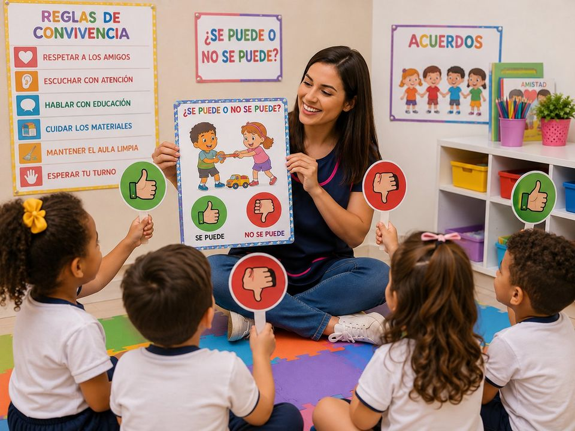
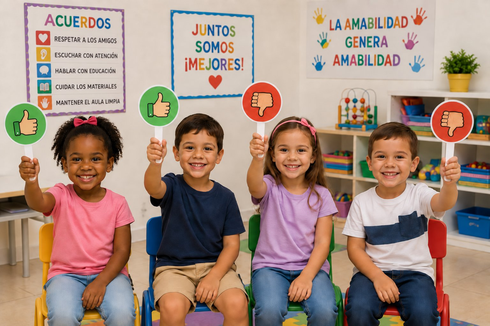
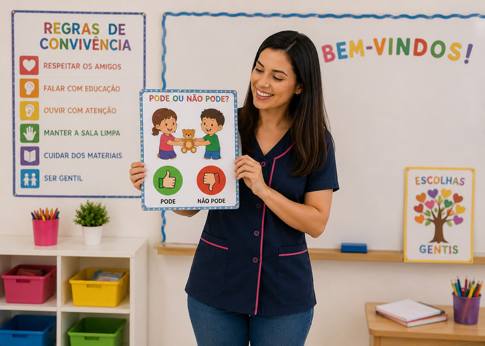
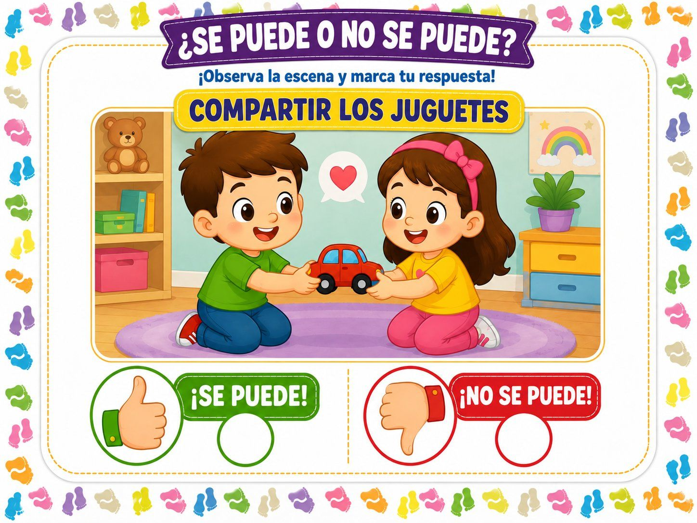
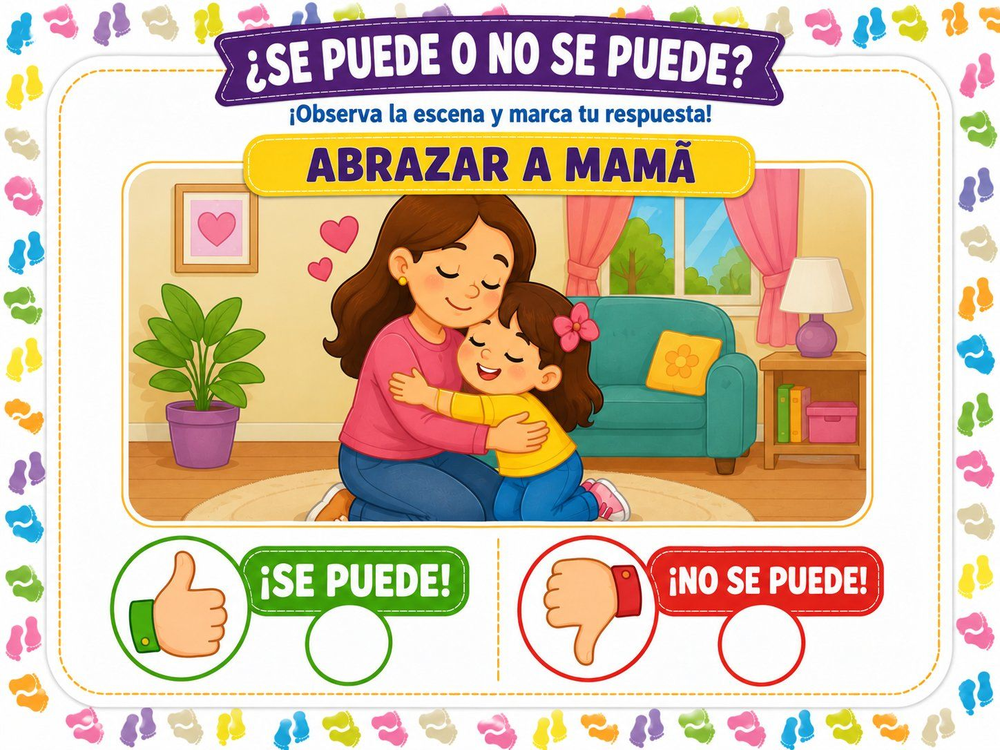
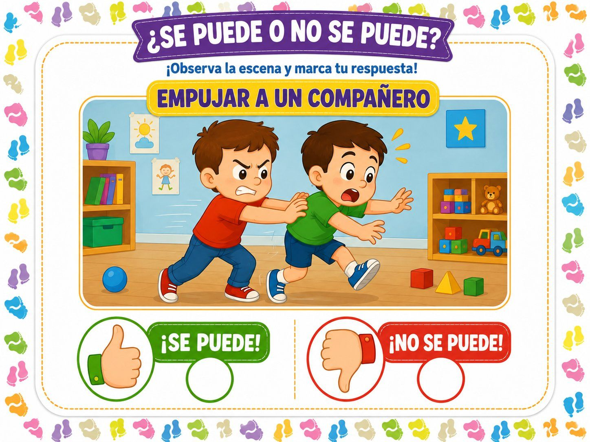
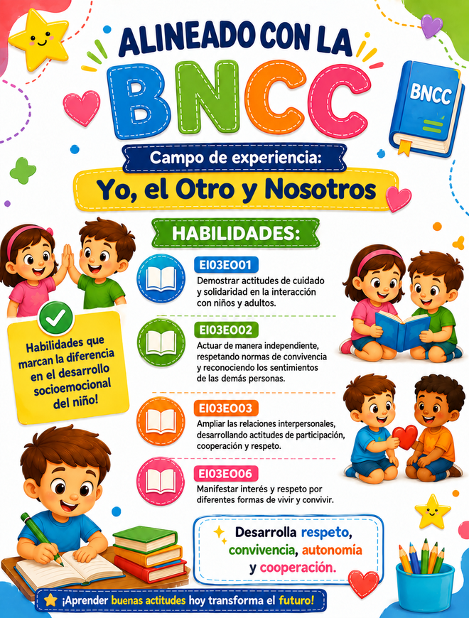

Aprendiendo Normas de Convivencia
Recurso pedagógico diseñado para ayudar a los niños a reconocer actitudes adecuadas e inadecuadas del día a día a través de situaciones ilustradas, estimulando el diálogo, la reflexión y el desarrollo de las habilidades socioemocionales.



Un material completo, listo para usar
20 ilustraciones grandes y a color
Un PDF con 20 ilustraciones grandes y a color con escenas que muestran actitudes positivas y negativas del día a día. Materiales listos para imprimir en formato de juego: solo descarga, imprime y usa.
Tres pasos para transformar tu clase
1. El niño observa
Analiza la escena ilustrada e identifica lo que está pasando en esa situación cotidiana.
2. Piensa en la actitud
Reflexiona si ese comportamiento es adecuado, conversando sobre sentimientos y consecuencias.
3. Elige la respuesta
Marca 👍 SÍ SE PUEDE o 👎 NO SE PUEDE y justifica su respuesta, desarrollando autonomía y lenguaje oral.
Mira cómo es el material




Competencias trabajadas
Enfoque: Desarrollo personal y social
- Conciencia socialMostrar actitudes de cuidado y solidaridad al interactuar con niños y adultos.
- AutorregulaciónActuar con autonomía, respetando las normas de convivencia y reconociendo los sentimientos de los demás.
- Habilidades para relacionarseAmpliar las relaciones con los demás, desarrollando actitudes de participación, cooperación y respeto.
- Toma de decisiones responsableEvaluar si una actitud es adecuada y elegir cómo actuar, pensando en las consecuencias.
Llévate 6 bonos junto con ¿Se Puede o No Se Puede?
Materiales extra para ampliar aún más las posibilidades pedagógicas en tu rutina.
Bono 1: Abecedario con Silabario
Abecedario completo acompañado del silabario para iniciar la lectura y la escritura.
- Facilita el reconocimiento de sílabas
- Apoyo visual para la alfabetización
- Listo para imprimir y usar
Bono 2: Abecedario Punteado
Letras punteadas para que los niños tracen y practiquen la motricidad fina.
- Desarrolla la motricidad
- Refuerza el trazo de las letras
- Ideal para la preescritura
Bono 3: Abecedario, Palabras y Sílabas
Actividades que unen letras, sílabas y palabras para ampliar el vocabulario.
- Amplía el vocabulario
- Estimula la conciencia fonológica
- Favorece la lectura autónoma
Bono 4: Dominó de Frutas
Juego de dominó con frutas para trabajar asociación, atención y vocabulario de forma lúdica.
- Estimula la atención y la memoria
- Trabaja nombres y colores de las frutas
- Ideal para actividades en grupo
Bono 5: Juego de Memoria del Abecedario
Juego de memoria para aprender el abecedario jugando y desarrollar el razonamiento.
- Refuerza el reconocimiento de las letras
- Desarrolla la memoria visual
- Divierte mientras enseña
Bono 6: Rompecabezas de Lectura
Rompecabezas con palabras para trabajar lectura, asociación imagen-palabra y escritura.
- Estimula la lectura
- Trabaja la asociación imagen-palabra
- Desarrolla el razonamiento lógico
Hecho para docentes de preescolar y primeros grados de primaria
Un material pensado para quienes trabajan a diario con niños en formación, listo para convertir escenas cotidianas en oportunidades de aprendizaje socioemocional.
La oferta termina en:
Cuando el contador llegue a cero, el precio sube.
Oferta de lanzamiento
- Láminas ilustradas con escenas cotidianas
- Tarjetas 👍 Sí se puede y 👎 No se puede
- Archivo digital en PDF: imprime cuantas veces quieras
- Basado en competencias socioemocionales (modelo CASEL)
- Acceso inmediato y de por vida
Hoy por solo
US$6.00
Pago único · sin mensualidades
Docente y Psicopedagoga
Doralice Aparecida Dumont
- Pedagoga
- Posgrado en Psicopedagogía
- Posgrado en Psicomotricidad en el autismo y otros trastornos del desarrollo
- Formación Internacional en Evaluación Psiquiátrica en la Infancia y la Adolescencia y Trastornos del Aprendizaje por el Child Behavior Institute of Miami
Garantía incondicional de 7 días
Prueba ¿Se Puede o No Se Puede? sin riesgo. Si en un plazo de 7 días sientes que no es para ti, te devolvemos el 100% de tu dinero. El riesgo es todo nuestro.
Preguntas frecuentes
Aprender buenas actitudes hoy transforma el futuro
Acceso inmediato, garantía de 7 días y pago único de US$ 6.00.
QUIERO ACCEDER AHORA